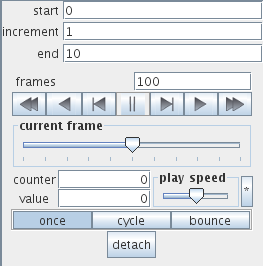

LOOP
The Loop module is used in parameter dependent data animation.
Output data
At output there are an integer and a float parameter, and a geometry object.
Computation tab

The user defines the parameter range by setting start and end value and parameter increment typing appropriate values into start, increment and end text fields.
The frames text field contains the number of animation frames. <---- ale nie zmienia sie increment
A set of buttons allows to navigate from frame to frame:
The current frame slider shows the current frame and animation step. The user can choose a frame number dragging the slider.
counter ?
value ?
The play speed slider defines the animation speed.
There are three run options for running the animation:
Press the detach button to detach/attach the navigation panel for the animation.